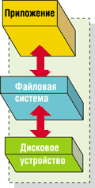
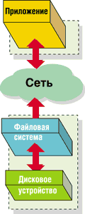
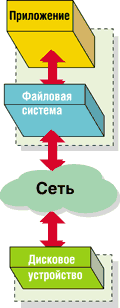
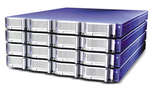
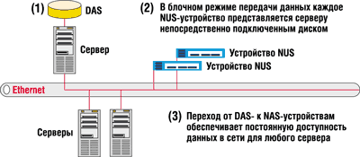

Алексей Борзенко,
доцент Рязанской государственной радиотехнической академии
Alex@csk.ryazan.ru
На протяжении последних сорока лет радикально изменились как требования к системам хранения данных, так и технологические возможности этих систем. Если в 70-80-х годах прошлого столетия емкость систем хранения выражалась в основном в мегабайтах, то в наши дни речь нередко идет уже о тера- и петабайтах. Стремительно растет и число людей, нуждающихся в оперативном доступе к информации. В прошлом развитие архитектур систем хранения данных сковывалось высокой стоимостью технологий и ограниченной полосой пропускания, но и сейчас, когда эти проблемы потеряли былую остроту, у разработчиков остаются стимулы для поиска более эффективных решений в области систем хранения. И все же, несмотря на все новшества последних лет, на рынке продолжают доминировать унаследованные архитектурные решения. Так, по данным компании IDC (http://www.idc.com), в первые годы нового века почти три четверти общего числа продаж систем хранения данных приходится на системы прямого подключения типа DAS (Direct-Attached Storage), не всегда соответствующие требованиям в области надежности и доступности данных.
Эволюция архитектур систем хранения данных
Помимо DAS в настоящее время на рынке предлагаются устройства хранения данных, подключаемые к сети, - NAS, а также сети хранения данных - SAN*. Каждое из этих решений разрабатывалось как ответ на растущие требования к системам хранения данных и основывалось на доступных на момент его создания технологиях. Особенности этих технологий неизбежно накладывают ограничения на возможности дальнейшей модификации и адаптации к изменчивым требованиям рынка.
*О SAN и NAS см. также "Системы хранения: базовые понятия", "Byte/Россия" № 12/2001.
Решения DAS (рис. 1), также известные как SAS (Server Attached Storage - системы, подключаемые непосредственно к серверу), были разработаны более сорока лет назад для расширения емкости хранения существующих серверов. В то время было два способа увеличить число томов, связанных с приложениями: добавить новые диски к имеющемуся серверу или приобрести новый сервер. На определенном этапе требования к емкости и времени доступа были невысокими, что делало системы DAS вполне приемлемым решением.
|  | Рис. 1. Архитектура DAS.
|
Отметим, что дисковая система DAS, ассоциированная с сервером, доступна только через этот сервер, что приводит к созданию отдельных "островов" данных и оказывается серьезным недостатком с точки зрения сегодняшней ИТ-инфраструктуры. Кроме того, DAS не позволяет нескольким серверам совместно использовать файлы, а для добавления дисковых накопителей к сети серверы должны переводиться в автономный режим. Чтобы разрешить эти проблемы и обеспечить избыточность и высокую готовность данных, компаниям приходилось копировать данные на несколько серверов и использовать различные RAID-конфигурации. Сегодня, невзирая на значительные изменения в объемах хранения и характере информационных систем, решения DAS остаются в основе своей неизменными. По мере роста требований к системам хранения компании просто добавляли диски к своим серверам и серверы - к сетям. Решение, когда-то считавшееся практичным, теперь привело к тому, что у компаний образовалась сложная инфраструктура систем хранения данных и огромные серверные фермы, управлять которыми становится все труднее.
Сетевое хранение данных
Архитектуры сетевых систем хранения были разработаны в 90-х гг. для преодоления проблем, характерных для DAS. Сетевые системы хранения должны были решить три основные задачи - снизить затраты и сложность управления данными, уменьшить трафик локальных сетей, повысить степень готовности данных и общую производительность.
Серьезные дебаты в последнее время развертывались вокруг архитектур NAS и SAN. В обеих для преодоления проблем DAS использовались ключевые технологии 90-х гг., основанные на применении дорогостоящих микропроцессоров и недорогих дисков. При этом NAS и SAN дополняли друг друга, решая различные аспекты общей проблемы. Результатом стало сосуществование двух архитектур сетевых систем, каждая из которых обеспечивает свои преимущества и функциональные возможности.
Устройства хранения данных, подключаемые к сети
Основная задача архитектуры NAS (Network Attached Storage) - упростить совместное использование файлов. На базовом уровне системы NAS (рис. 2) представляют собой оборудование, подключаемое непосредственно к локальной сети. В этом состоит их основное отличие от систем с индивидуальными серверами и прямым подключением изолированных накопителей. Устройства NAS, часто называемые файлерами, состоят из единого головного устройства, выполняющего обработку данных, и поддерживающей сетевое соединение цепочки дисков, в которую могут входить от 4 до 100 устройств. Устройства NAS дают возможность использовать системы хранения в сетях Ethernet, для организации совместного доступа к файлам в них применяется протокол TCP/IP. Благодаря этим устройствам клиенты могут совместно использовать файлы, даже если клиентские системы работают под управлением различных ОС. В отличие от архитектуры DAS, в системах NAS не нужно переводить серверы в автономный режим для увеличения общей емкости; диски можно добавлять в структуру NAS, просто подключив устройство в сеть.
|  | Рис. 2. Архитектура NAS.
|
Преимущества и недостатки NAS
|
Некоторые из недостатков NAS коренятся в принципиальных ограничениях этой технологии. В то время, когда процессоры были дороги в сравнении с жесткими дисками, имело смысл связывать с каждым процессором как можно больше дисковых устройств. Соотношение числа дисков и числа процессоров в устройствах NAS часто достигает 30:1, что затрудняет обработку больших объемов данных и снижает производительность. Проблема производительности усугубляется еще и тем, что такие большие емкости хранения подключаются к сети через единственное сетевое соединение. Несколько серверов, обращающихся к большим файлам на одном NAS устройстве, могут завладеть всеми его вычислительными ресурсами, создавая в пределах этого соединения узкое место. Кроме того, NAS-устройства не могут совместно использовать носители других NAS-устройств в сети, при этом каждое добавляемое в сеть устройство хранения должно управляться как отдельный том.
NAS-устройства оперируют только в файловом формате и не способны разделять свою емкость хранения между несколькими главными компьютерами (хостами), и этот недостаток также ограничивает их применение.
Сети хранения данных
Системы SAN (Storage Area Networks) решают не только многие проблемы DAS и NAS, но, что более важно, и проблемы перегрузки каналов связи и задержки в локальных IP-сетях (10/100). Впервые концепция SAN была предложена в 1998 г. Разумеется, она возникла не на пустом месте. Как и многие другие современные компьютерные технологии, эта концепция была заимствована из мира мэйнфреймов, где ее применяли, например, в центрах обработки данных для подключения компьютеров к системам хранения и распределенным сетям.
Основное различие между SAN и NAS состоит в способе организации обмена данными между устройствами хранения и серверами. Вообще говоря, архитектура SAN (рис. 3), переносящая всю систему хранения в выделенную подсеть, ориентирована на интенсивную работу в режиме резервного копирования и обмена данными. Основанные на протоколе Fibre Channel решения SAN позволяют в широких пределах изменять емкость системы хранения данных, гарантируя при этом высокую пропускную способность в пределах выделенной подсети. Архитектура SAN оптимизирована для передачи данных на уровне блоков, и это делает ее отличным средством для работы с большими базами данных, обеспечивающим высокую надежность, особенно в обработке динамичного структурированного контента. В отличие от систем, подключаемых к сети, SAN не использует существующую локальную сеть для передачи данных между серверами и устройствами хранения; данные перемещаются по самой сети хранения, не вызывая в локальной сети избыточного трафика. Однако использование блочных команд ввода-вывода означает, что совместное использование файлов различными пользователями в общем случае исключено, хотя возможность совместного использования накопителей различными серверами имеется.
|  | Рис. 3. Архитектура SAN.
|
При всех преимуществах SAN эта архитектура построена на основе дорогостоящих, пока закрытых фирменных (proprietary) разработок, которые зачастую непросто интегрировать в существующие сетевые инфраструктуры. Кроме того, реализация и администрирование SAN-систем - это очень сложные задачи, требующие привлечения персонала с большим опытом управления сетями на базе Fibre Channel. Обучение или найм такого персонала в современной высококонкурентной среде может стоить очень дорого. Еще один недостаток, присущий архитектуре SAN, - ограничение по дальности: предельное расстояние между устройствами хранения данных не должно превышать 10 км. Эта особенность затрудняет зеркалирование на удаленных площадках, что, в свою очередь, может сделать проблематичным восстановление информации после катастрофических отказов системы. Невозможность совместного использования файлов, высокая стоимость и необходимость привлечения значительных ресурсов для управления этими сложными решениями пока в значительной степени ограничивает сферы применения технологии SAN.
Преимущества и недостатки SAN
|
Другие сетевые решения
Надо отметить, что наряду с перечисленными существует еще несколько заслуживающих внимания сетевых технологий хранения. Так, решения CCS (Carrier Class Solutions) обеспечивают огромную емкость и предназначаются в основном для крупных центров данных, обслуживающих Интернет. Рынок для этих решений очень мал, и они, как правило, не совместимы с существующей сетевой инфраструктурой. Фактически все аспекты этих решений - ОС, коммутаторы, дисковые массивы, стойки и т. п. - это фирменные разработки (proprietary, т. е. принадлежащие одной компании). Из-за этого выбор систем хранения CCS сопряжен с высоким риском по сравнению с открытыми архитектурными решениями.
Другое известное решение - коммутаторы систем хранения (storage switch). Это интеллектуальное оборудование, которое располагается между независимыми устройствами хранения данных и обеспечивает возможность виртуализации независимых томов. Такие коммутаторы не обладают буферной памятью, собственной емкостью хранения данных и вычислительными ресурсами, имеющимися, как правило, в полностью интегрированных решениях. Недостаток данного решения состоит в том, что подобные устройства обычно располагаются на пути данных от устройства хранения к серверу. При этом все передаваемые данные должны проходить через конкретное устройство, что потенциально чревато образованием узких мест и снижением эффективности. Еще одно ограничение связано с тем, что большинство коммутаторов систем хранения на основе протокола IP в настоящее время полагаются на протокол iSCSI, спецификации которого пока находятся в процессе уточнения.
Новые технологические перспективы
По своим возможностям современные технологии значительно превосходят те, что существовали на момент создания архитектур DAS, NAS и SAN. Кроме того, значительно изменилась сама структура, в пределах которой были рождены предшествовавшие решения в области систем хранения данных. Сегодня руководители ИТ-подразделений сталкиваются не только с проблемами роста емкости хранения, но, что более важно, с вопросами управления хранимой информацией, поддержки ее целостности и распространения среди пользователей. Решение проблем, связанных с неповоротливостью инфраструктур систем хранения, ростом объемов данных и ограниченностью ресурсов управления, требует новаторского подхода, использующего современные технологические достижения.
Развитие технологий сопровождается стремительным расширением полосы пропускания (Gigabit и 10 Gigabit Ethernet), снижением стоимости микропроцессоров и жестких дисков, широким распространением программно-аппаратных средств TCP/IP и кластерных решений. Благодаря существенному расширению полосы пропускания сетей проблемы задержки обслуживания и перегрузки сети (которые были ключевыми факторами, вызвавшими к жизни появление систем SAN) играют все меньшую роль для пользователей. Появление недорогих и мощных микропроцессоров приводит к тому, что необходимость максимизировать число дисков на один процессор в системах NAS становится неактуальной. Природа и объемы данных, передаваемых по сетям, сегодня уже не те, что были в эпоху разработки первых решений в этой области. Широкое использование цифровых изображений и видео, а также рост числа таких приложений, как видеопочта, также предъявляют повышенные требования к решениям в сфере сетевого хранения данных.
В новых условиях требуются и новые архитектуры систем хранения информации. Конвергенция NAS и SAN в последнее время стала одной из самых важных тенденций в отрасли. Сегодня многие производители ищут пути объединения обеих технологий в единую сетевую инфраструктуру хранения, которая обеспечит консолидацию данных и централизацию резервного копирования, упростит общее администрирование, масштабируемость и защиту данных.
Чтобы добавить в сеть хранения возможность разделения не только физических дисков, но и логической структуры файловых систем, необходим промежуточный управляющий сервер, выполняющий все функции сетевых протоколов обработки запросов на уровне файлов. Отсюда общий подход к объединению SAN и NAS с помощью NAS-устройства без интегрированной дисковой подсистемы, но с возможностью подключения компонентов сети хранения. Такие устройства часто называют NAS-шлюзами.
А вот малоизвестная американская компания LeftHand Networks (http://www.lefthandnetworks.com) создала новую модель сетевого хранения данных на основе Ethernet, получившую название NUS (Network Unified Storage - унифицированное сетевое хранение). По мнению специалистов LeftHand, будущее индустрии систем хранения данных лежит в области архитектуры, которая опирается на инфраструктуры Ethernet, полностью интегрируется с сетью и способна осуществлять коммуникации как в блочном, так и в файловом формате. Наиболее перспективные решения обладают гибкими возможностями виртуализации систем хранения и обеспечивают простое масштабирование при росте запросов пользователей.
По словам представителей LeftHand Networks, их решение - это реальная альтернатива как SAN, так и NAS. Первым решением в категории NUS стала система NSM 100.
Как известно, пользователи традиционно обращаются к устройствам DAS и SAN для передачи данных на уровне блоков. При этом можно более точно определить, где и как эти данные будут храниться. Однако, с другой стороны, в типичных клиент-серверных архитектурах предпочтительнее использовать серверы NAS для передачи данных на уровне файлов. В новом продукте NSM 100 поддерживаются как блочные, так и файловые протоколы. Разработчики обеспечили подключение своих устройств к сетям Ethernet (Gigabit Ethernet), причем обмен данными идет либо блочными, либо файловыми операциями по оригинальному протоколу AEBS (Advanced Ethernet Block Storage).
NSM 100 представляет собой устройство высотой 1U (4,375 см), оснащенное процессором Pentium III/866 МГц (внешний вид NUS-системы показан на рис. 4). Пользователи могут выбрать до четырех IDE-дисков с возможностью горячей замены общей емкостью около 500 Гбайт.
|  | Рис. 4. Внешний вид NUS-системы.
|
Архитектура NUS
Архитектура унифицированных сетевых систем хранения (рис. 5), соединяющая, по мнению ее разработчиков, эффективность SAN с простотой NAS, изначально поддерживает работу с файлами и способна передавать блоки данных по существующим сетям на основе Ethernet. Системы NUS, как и продукты класса NAS, чрезвычайно просты в конфигурировании и поддерживают несколько файловых протоколов для совместного использования файлов клиента. Как и системы SAN, они поддерживают протоколы передачи данных блоками, которые обычно применяются при реализации больших баз данных.
|  | Рис. 5. NUS-устройства в корпоративной сети.
|
Немаловажно и то, что эта архитектура не привязана к конкретному протоколу и имеет общепринятый интерфейс администрирования, посредством которого осуществляется кластеризация, управление и виртуализация.
В то время как решения на основе NAS зависят от единственного сетевого соединения с системой хранения, архитектура NUS позволяет избежать образования узких мест и повышает гибкость информационной системы путем параллельной кластеризации в сетях 10/100 или Gigabit Ethernet. Использование протокола IP для связи по Ethernet устраняет ограничение на расстояние в 10 км, присущее решениям SAN на основе протокола Fibre Channel. Разделение (расслоение) и зеркалирование данных возможно как между разными устройствами, так и в пределах одного устройства - вне зависимости от расстояния. Это позволяет компаниям масштабировать системы хранения как в файловой, так и в блочной конфигурации.
Ниже обсуждаются некоторые черты и важнейшие атрибуты архитектуры NUS.
Поддержка протоколов передачи данных
Решения на основе NUS соединяют простоту поддержки различных протоколов передачи файлов (NFS, CIFS, HTTP и FTP) и возможности соединения по Ethernet со способностью поддерживать блочную передачу данных по сетям Ethernet.
По данным IDC, около 85% всех установленных сетей построено на основе Ethernet. Решения NUS, построенные на фундаменте Ethernet-сетей, используют протокол TCP/IP, реализуя преимущества возросших скоростей передачи - до 1 и 10 Гбит/с.
Кроме того, архитектура NUS хорошо приспособлена к поддержке появившихся недавно и будущих протоколов, таких, как iSCSI и Infiniband.
Гранулярность
Одна из важных особенностей решения на основе архитектуры NUS - гранулярность и гибкость. В частности, это подразумевает, что пользователи могут приобретать только то количество накопителей для хранения информации, которое необходимо, и конфигурировать их для поддержки передачи данных как в блочном, так и файловом формате. Позже в систему можно добавить новые тома - либо подключая их к существующим кластерам, либо путем виртуализации, как часть тома, расположенную на любом участке сети.
Переход к решениям на основе NUS
Благодаря гибкости функционирования как в блочном, так и в файловом формате, а также способности поддерживать множество разнообразных сетевых протоколов, решения NUS должны упростить для компаний разработку по-настоящему интегрированной сетевой архитектуры хранения данных. Кроме того, решения на основе NUS, будучи совместимы с современными архитектурами, дают возможность эффективно использовать сделанные ранее инвестиции в технологии NAS и SAN. NUS-устройства в блочном режиме могут также использоваться для расширения инфраструктуры DAS или при переходе компании к сетевым системaм хранения. Переход от DAS- к NUS-архитектуре представляет собой простую миграцию - такой подход оказывается дешевле, чем реализация SAN, и не имеет ограничений, свойственных NAS. По мере переноса данных с DAS-системы на NUS-устройства избыточные емкости хранения можно объединять (консолидировать). Пользователи приобретают преимущества инфраструктуры, основанной на Ethernet, без необходимости замены кабелей или коммутаторов.
Таким образом, поддерживая протоколы как SAN, так и NAS, технология компании LeftHand Networks дает большую свободу работы с каждым из устройств хранения и помогает администратору упростить архитектуру центра обработки данных. Пользователи также могут централизованно управлять всеми продуктам LeftHand Networks, рассматривая большое число устройств как один сервер, видимый в сети. Разработчики предлагают считать системы NUS новым классом устройств хранения данных, которые коренным образом изменяют способы управления, поддержки и распространения ресурсов хранения. Высокая масштабируемость, файловый и блочный форматы передачи данных и использование существующих инфраструктур Ethernet определяют новую архитектуру, которая основана на современных технологиях и реалиях информационных систем.
Построение единых сетевых систем, объединяющих возможности SAN и NAS, - лишь один из шагов в направлении глобальной интеграции корпоративных систем хранения. В отрасли идет поиск путей оптимальной консолидации. Отсюда и тенденция к переводу сетей хранения на IP-протокол, и растущий интерес к различным реализациям идеи виртуализации хранения.